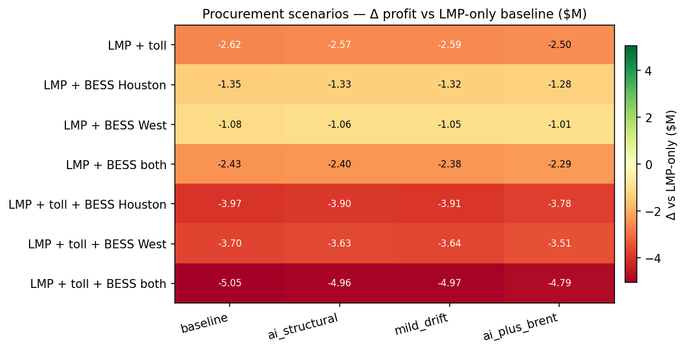
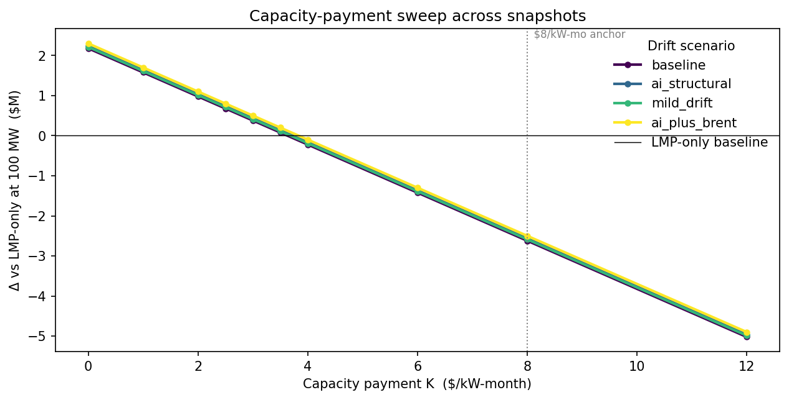
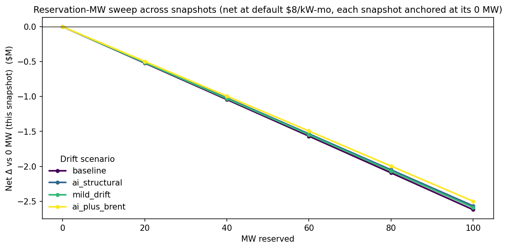
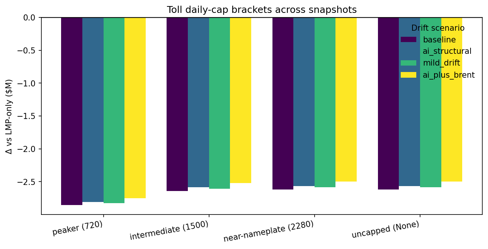

Cross-scenario view of the four 50-path Monte Carlo drift scenarios. Each snapshot is the same model under a different gas / power forward-curve overlay. Select any table, copy, and paste into Word or Google Docs — both apps preserve the HTML table structure.
| Snapshot | Gas drift | Power drift | Cadence winner | Cadence profit | Δ vs baseline | Full-cost proc. winner | Variable-cost proc. winner | VC gap ($M) | Breakeven K* |
|---|---|---|---|---|---|---|---|---|---|
| baseline | +0.0% | +0.0% | 90d | $36,372.21M | +0.00 | LMP only | LMP + toll + BESS both | +5.75 | $3.633/kW-mo |
| ai_structural | +0.5% | +1.0% | 90d | $36,371.89M | -0.32 | LMP only | LMP + toll + BESS both | +5.84 | $3.725/kW-mo |
| mild_drift | +3.0% | +1.5% | 90d | $36,371.69M | -0.53 | LMP only | LMP + toll + BESS both | +5.83 | $3.689/kW-mo |
| ai_plus_brent | +6.5% | +4.0% | 90d | $36,370.84M | -1.37 | LMP only | LMP + toll + BESS both | +6.01 | $3.835/kW-mo |
Negative cells = the scenario underperforms LMP-only in that drift overlay.
| Scenario | baseline | ai_structural | mild_drift | ai_plus_brent |
|---|---|---|---|---|
| LMP + toll | -2.62 | -2.57 | -2.59 | -2.50 |
| LMP + BESS Houston | -1.35 | -1.33 | -1.32 | -1.28 |
| LMP + BESS West | -1.08 | -1.06 | -1.05 | -1.01 |
| LMP + BESS both | -2.43 | -2.40 | -2.38 | -2.29 |
| LMP + toll + BESS Houston | -3.97 | -3.90 | -3.91 | -3.78 |
| LMP + toll + BESS West | -3.70 | -3.63 | -3.64 | -3.51 |
| LMP + toll + BESS both | -5.05 | -4.96 | -4.97 | -4.79 |



